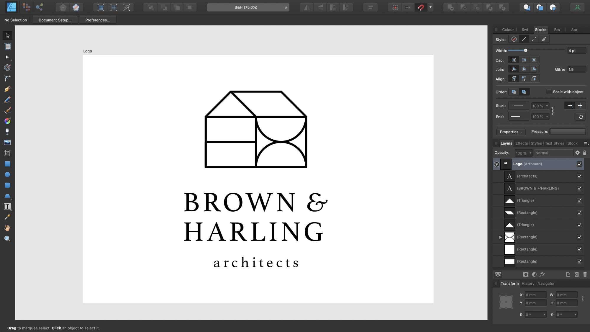
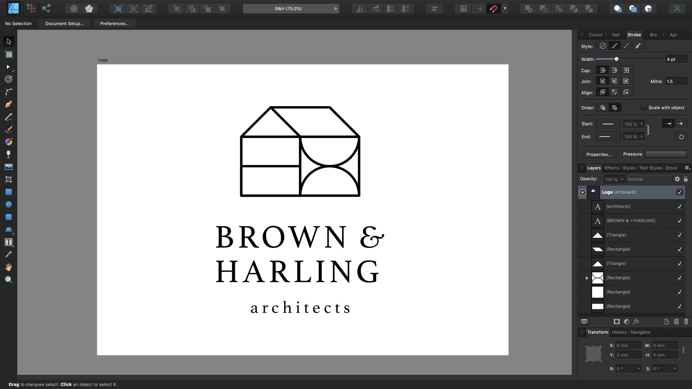
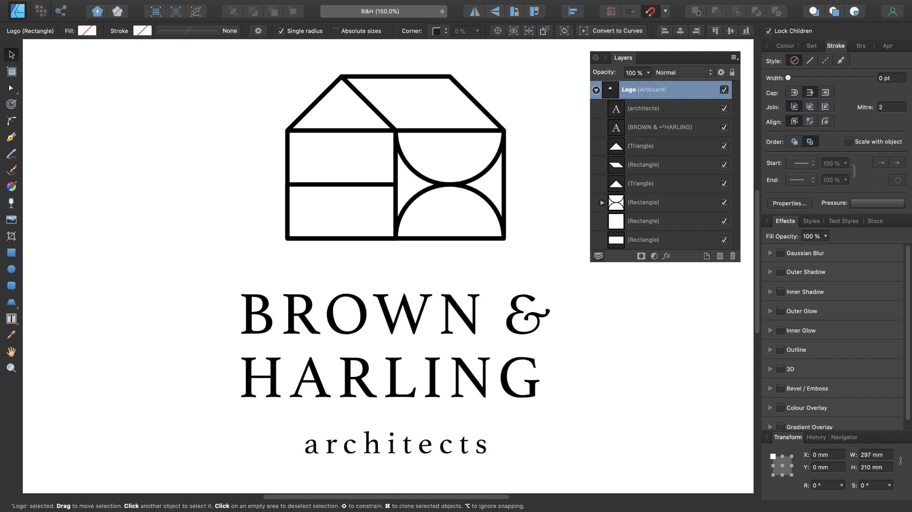
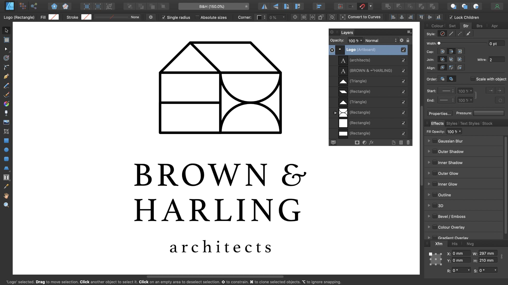

Certain settings and preferences in Affinity Designer can be adjusted to help make the workspace more accessible, improving visibility of designs, readability of text, and adjustability of tool handles.
Customizing the UI appearance
From the app's preferences, you can change the UI style, as well as the UI background, artboard background gray level or UI gamma level, adjusting the contrast to improve visibility.


To change the UI from dark to light (or vice versa):
Choose Affinity Designer>Preferences.
Choose Edit>Preferences.
Click the User Interface label.
For UI Style, choose either Dark or Light.
To change the UI background, Artboard background or Gamma level:
Choose Affinity Designer>Preferences.
Choose Edit>Preferences.
Click the User Interface label.
Drag the sliders to set the Background Grey level, Artboard Background Grey level and/or UI Gamma level.
Customizing the UI font size
The UI font size can be increased via the app's preferences to improve readability of text throughout the app.


To change the UI font size:
Choose Affinity Designer>Preferences.
Choose Edit>Preferences.
Click the User Interface label.
For Font UI Size, choose either Default or Large.
Customizing tool handle sizes
Tool handle sizes can be increased and decreased via the app's preferences, making them more visible and easier to select.